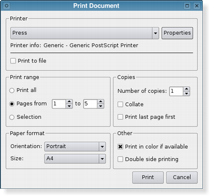
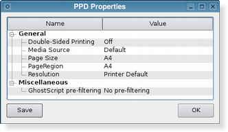

QPrintDialog¶
Synopsis¶
Functions¶
- def
open(receiver, member) - def
options() - def
setOption(option[, on=true]) - def
setOptions(options) - def
testOption(option)
Detailed Description¶
The
PySide2.QtPrintSupport.QPrintDialogclass provides a dialog for specifying the printer’s configuration.The dialog allows users to change document-related settings, such as the paper size and orientation, type of print (color or grayscale), range of pages, and number of copies to print.
Controls are also provided to enable users to choose from the printers available, including any configured network printers.
Typically,
PySide2.QtPrintSupport.QPrintDialogobjects are constructed with aPySide2.QtPrintSupport.QPrinterobject, and executed using theexec()function.printDialog = QPrintDialog(printer, parent) if printDialog.exec_() == QDialog.Accepted: # print ...If the dialog is accepted by the user, the
PySide2.QtPrintSupport.QPrinterobject is correctly configured for printing.
  The printer dialog (shown above in Plastique style) enables access to common printing properties. On X11 platforms that use the CUPS printing system, the settings for each available printer can be modified via the dialog’s Properties push button.
On Windows and macOS , the native print dialog is used, which means that some
PySide2.QtWidgets.QWidgetandPySide2.QtWidgets.QDialogproperties set on the dialog won’t be respected. The native print dialog on macOS does not support setting printer options, i.e.PySide2.QtPrintSupport.QPrintDialog.setOptions()andPySide2.QtPrintSupport.QPrintDialog.setOption()have no effect.In Qt 4.4, it was possible to use the static functions to show a sheet on macOS . This is no longer supported in Qt 4.5. If you want this functionality, use
QPrintDialog.open().
-
class
PySide2.QtPrintSupport.QPrintDialog(printer[, parent=nullptr])¶ -
class
PySide2.QtPrintSupport.QPrintDialog([parent=nullptr]) Parameters: - printer –
PySide2.QtPrintSupport.QPrinter - parent –
PySide2.QtWidgets.QWidget
Constructs a new modal printer dialog for the given
printerwith the givenparent.- printer –
-
PySide2.QtPrintSupport.QPrintDialog.accepted(printer)¶ Parameters: printer – PySide2.QtPrintSupport.QPrinter
-
PySide2.QtPrintSupport.QPrintDialog.open(receiver, member)¶ Parameters: - receiver –
PySide2.QtCore.QObject - member – str
This is an overloaded function.
Opens the dialog and connects its
PySide2.QtPrintSupport.QPrintDialog.accepted()signal to the slot specified byreceiverandmember.The signal will be disconnected from the slot when the dialog is closed.
- receiver –
-
PySide2.QtPrintSupport.QPrintDialog.options()¶ Return type: PySide2.QtPrintSupport.QAbstractPrintDialog.PrintDialogOptions
-
PySide2.QtPrintSupport.QPrintDialog.setOption(option[, on=true])¶ Parameters: - option –
PySide2.QtPrintSupport.QAbstractPrintDialog.PrintDialogOption - on –
PySide2.QtCore.bool
Sets the given
optionto be enabled ifonis true; otherwise, clears the givenoption.- option –
-
PySide2.QtPrintSupport.QPrintDialog.setOptions(options)¶ Parameters: options – PySide2.QtPrintSupport.QAbstractPrintDialog.PrintDialogOptions
-
PySide2.QtPrintSupport.QPrintDialog.testOption(option)¶ Parameters: option – PySide2.QtPrintSupport.QAbstractPrintDialog.PrintDialogOptionReturn type: PySide2.QtCore.boolReturns
trueif the givenoptionis enabled; otherwise, returns false.
© 2018 The Qt Company Ltd. Documentation contributions included herein are the copyrights of their respective owners. The documentation provided herein is licensed under the terms of the GNU Free Documentation License version 1.3 as published by the Free Software Foundation. Qt and respective logos are trademarks of The Qt Company Ltd. in Finland and/or other countries worldwide. All other trademarks are property of their respective owners.